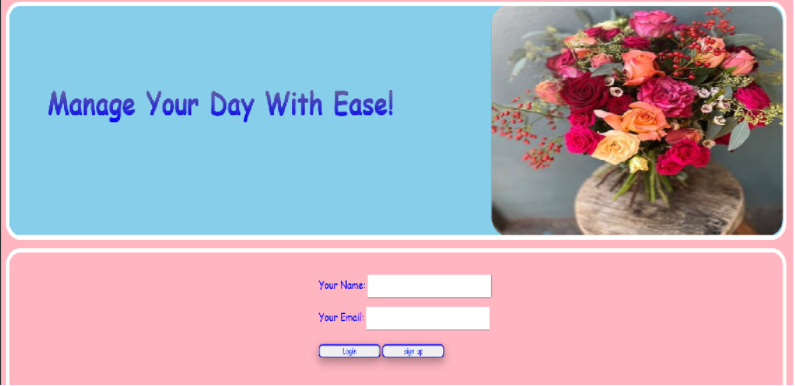
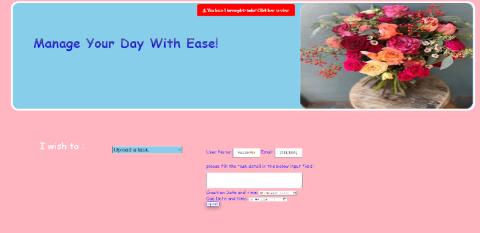

ToDoList Web Application – Case Study
A simple, scalable task management system – Case Study
📌 Problem Statement
People often struggle to keep up with their commitments as they lose track of dates and time-sensitive tasks. We tried to Create and app that remind user for the tasks and the target date.

Login and authentication screen (initial user entry point)
🎯 Objective
- Create a clean, responsive UI
- Ensure mobile-first compatibility
- Keep design minimal and readable

User to upload a tasks
🛠 Technologies Used
- HTML5
- CSS3 (Flexbox & Media Queries)
- PHP (Structure readiness)
- JavaScript
- MySQL
⚙️ Approach
The layout was designed using Flexbox with a mobile-first mindset. PHP and MySQL were used for future scalability, even though the current implementation is static. AJAX was used to fetch and update tasks dynamically without full page reloads.

Main task dashboard showing completed tasks
📈 Learnings
- Understood the importance of mobile-first design and responsive layouts using Flexbox.
- Learned how SPA-style navigation improves user experience by avoiding full page reloads.
- Gained hands-on experience with structuring frontend and backend logic separately.
- Improved understanding of AJAX-based data fetching and dynamic UI updates.
- Realized the value of clean UI and minimal design for productivity applications.
🚀 Future Enhancements
- Implement task reminders and alerts for time-sensitive tasks.
- Add task priority levels (High / Medium / Low).
- Introduce user authentication with session management.
- Enable task search and filter by date or status.
- Convert the application into a full REST-based backend.